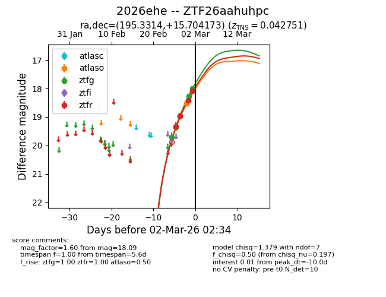
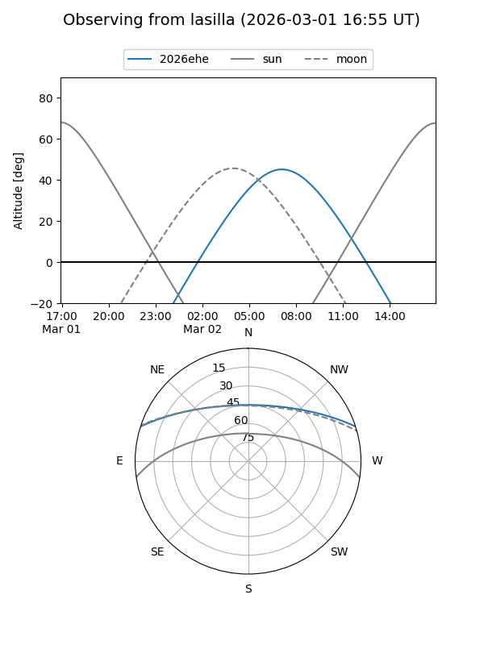
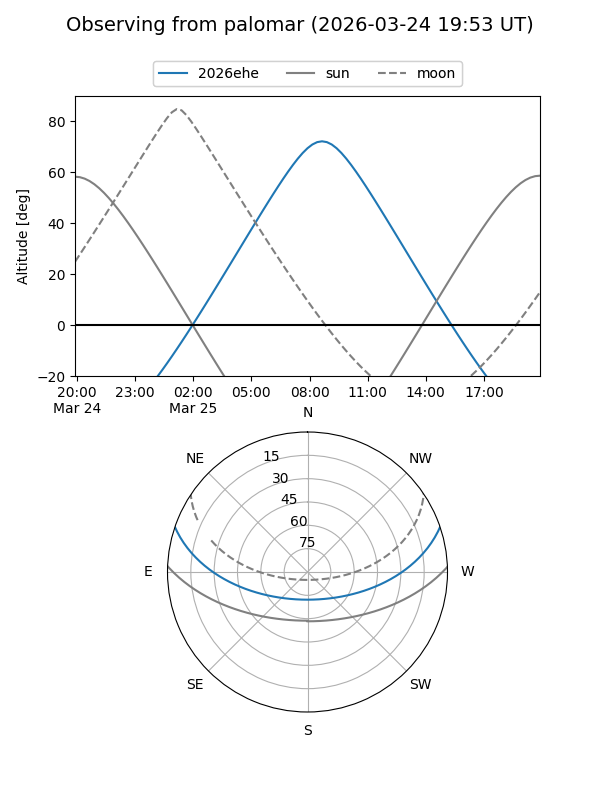
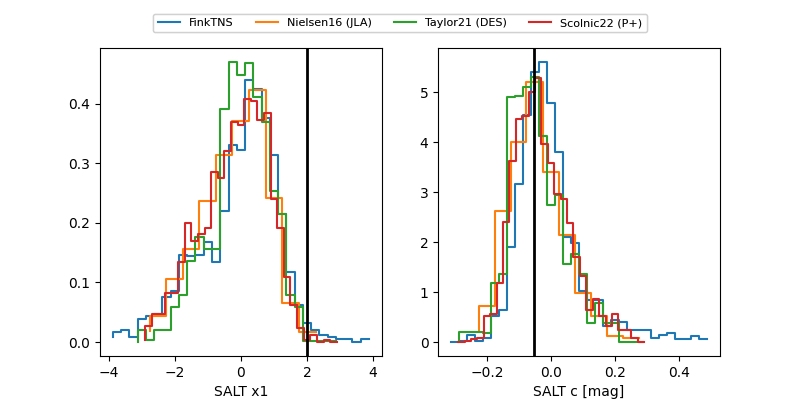

2026ehe
Target 2026ehe at 2026-03-02 02:35
Aliases and brokers:
FINK: link
Lasair: link
ALeRCE: link
TNS: link
YSE: link
alt names
ZTF26aahuhpc (ztf,fink_ztf)
2026ehe (tns,yse)
Coordinates:
equatorial (ra, dec) = 195.3314,+15.70417
equatorial (HMS+DMS) = 13:01:19.53,+15:42:15.02
galactic (l, b) = (314.7946,+78.34756)
Flags:
confirmed ia
Photometry:
last atlaso=18.53, ztfg=17.99, ztfr=18.09
1 atlaso, 5 ztfg, 4 ztfr detections
Lightcurve

Visibility


Additional plots
